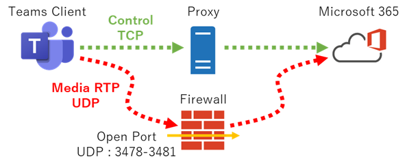
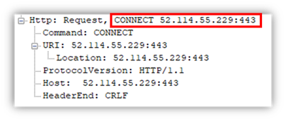
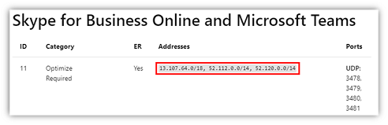
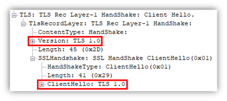
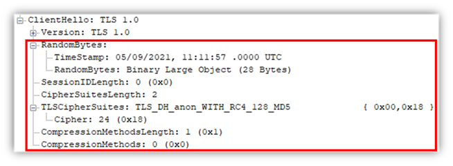
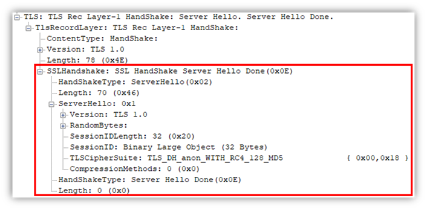

こんにちは、Unified Communications サポート チームです。
いつも Microsoft Teams をご利用いただきありがとうございます。
Teams を用いた通話や会議は、リモートワークの需要が増加する昨今の状況におけるコミュニケーション手段として非常に重要な機能といえます。
オンライン会議で利用されるモダリティのうち、音声/ビデオ/デスクトップ・アプリケーション共有はまとめてメディア通信と呼ばれており、可能な限り高い品質、並びに高いリアルタイム性の通信要件が求められます。
そのため、通信経路を最適化し、品質劣化要因を排除することを目的とし、UDP を用いた Proxy Server を経由しない接続が可能な構成を強く推奨しております。
しかしながら、お客様のセキュリティポリシーによっては通信品質よりもセキュリティが優先され、すべての通信を Proxy Server 経由としなければいけないケースもあります。
今回は Proxy Server のバイパスについて改めて説明させていただいたうえで、メディア通信を Proxy Server 経由とする際の注意点について説明いたします。
メディア通信の Proxy バイパス
Teams (および Skype for Business) の Proxy Server に関する推奨事項については、以下の公開情報に詳細が記載されています。
- Teams または Skype for Business Online 向けのプロキシ サーバー
https://docs.microsoft.com/ja-jp/microsoftteams/proxy-servers-for-skype-for-business-online
メディア通信は高いリアルタイム性が求められるため、遅延や揺らぎ、ロストの発生を可能な限り低減することが重要です。また、再送による恩恵が得られないため、オーバーヘッドの多い TCP よりも UDP を用いた接続が品質面では優位であるとされています。Teams は UDP/TCP、および Proxy Server を経由する TCP の接続に対応していますが、品質面で優位性が低い TCP を用い、さらにサーバーの負荷やホップ数の増加による影響を受けやすい Proxy Server を経由した接続は品質を考慮すると推奨されないこととなります。そのため、メディア通信だけでも Proxy Server をバイパスするネットワーク構成を推奨しており、要件をまとめると以下となります。
- クライアント自身が外部の DNS ゾーンを名前解決可能であること。
Skype for Business では必須要件でしたが、Teams の実装においては必須ではありません。
- UDP トラフィックが直接インターネットへ接続できるようにルーティングされること。
NAT 処理においてソースポートが変換されることは、Teams の動作に影響しません。
- 経路上のファイアウォール等において UDP ポートが開放されていること。
詳細は後述します。
- その他の要件は以下をご参照ください。
Microsoft Teams 用に組織のネットワークを準備する
https://docs.microsoft.com/ja-jp/microsoftteams/prepare-network
ファイアウォールで開放が必要な宛先とポートは以下のとおりです。
宛先アドレス
13.107.64.0/18, 52.112.0.0/14, 52.120.0.0/14
宛先ポート
UDP: 3478、3479、3480、3481
※UDP を開放している場合、TCP:443 は開放されていなくても問題ありません。最新の情報は以下をご確認ください。
Office 365 URL および IP アドレス範囲
https://docs.microsoft.com/ja-jp/microsoft-365/enterprise/urls-and-ip-address-ranges
※”Skype for Business Online および Microsoft Teams” の ID:11 が該当します。＜ バイパス構成のイメージ ＞

Proxy Server 経由で接続する場合の注意点
セキュリティ面を優先し、ファイアウォールで UDP を開放せずにメディア通信が Proxy Server を経由するネットワーク構成にする必要がある場合、Proxy Server で次の点を考慮する必要があります。
接続先の URL で FQDN を用いない
Teams が利用する Transport Relay Protool の実装に基づき、メディア通信をリレーする Media Processor サーバーの接続先情報は FQDN ではなく IP アドレスが用いられます。

そのため、Proxy Server で接続先を制限している場合は以下の IP アドレス範囲で許可していただく必要があります。許可が必要な IP アドレス範囲は、”Office 365 URL および IP アドレス範囲” で記載されている ID 11 が該当します。

<< 13.107.64.0/18, 52.112.0.0/14, 52.120.0.0/14 >>ID:11 自体は Proxy バイパスを目的として UDP が示されますが、TCP:443 としては ID:12 以降に含まれており、宛先 IP アドレス範囲自体は ID:11 と同じ範囲となります。
TLS バージョンが 1.0
メディア通信の暗号化には SRTP が用いられています。重複した暗号化処理による無駄を避けるため、TLS における暗号化は実施されていませんが、Proxy Server を経由した接続を実現するためにも TLS のフォーマットが用いられています。ただし、Lync/Skype for Business といった古い製品との相互接続を考慮する必要があり、見かけ上は TLS バージョンに 1.0 が定義されています。

Proxy Server で TLS 1.0 がブロックされている場合、対象となる IP アドレス範囲に対しては除外する必要があります。TLS の Client Hello に Server Name Indicator が含まれない
前述のとおりフォーマットとしては TLS に準じていますが、含まれる属性は簡略化されています。Client Hello に含まれる属性のうち、SNI (Server Name Indicator) 属性が無いことにより接続に失敗する場合があります。SNI 属性は Proxy Server や Firewall 等が接続先を判断するために用いる製品があり、SNI 属性自体が無い場合に宛先不明な通信としてブロックされるケースがあります。

ホワイトリストを構成する必要がある場合、CONNECT リクエストに含まれる URL を用いてチェックする必要があります。TLS の Server Hello でサーバー証明書が提示されない
前述のとおり暗号化は SRTP で行われ、TLS の暗号化は用いれていません。そのため、Server Hello には TLS 暗号化で必要なサーバー証明書が含まれていません。

SSL インスペクションなどのセキュリティ機能を有する Proxy Server の場合、不正な TLS 接続と判断して切断してしまうケースもあります。Proxy Server のログをご確認いただき、Microsoft 365 宛の通信で切断している状況が確認される場合は、ホワイトリストに登録してインスペクションの対象から除外する必要があります。
まとめ
高い通信品質を求める Teams のメディア通信は、柔軟で確実な接続と高い品質確保を両立するため、複雑な実装により UDP/TCP での接続、さらには Proxy Server を経由する接続のいずれにも対応します。この複雑な実装により Proxy Server を用いたインターネットアクセス環境であっても、特定の条件で UDP ポートが開放されていれば品質面で優位性の高い UDP での接続が利用されます。繰り返しとなりますが、Microsoft Teams としてはメディア通信の品質は優先事項であると考えており、UDP ポート開放による Proxy Server をバイパスする構成を強く推奨しています。セキュリティ要件が優先される等の理由により UDP ポートの開放が困難な場合は、今回説明させていただいた Teams の実装を十分にご理解いただき、Proxy Server でブロックされることの無いように設定や構成を考慮いただきますようお願いいたします。なお、Proxy Server を経由する場合でも可能な限り高い通信品質が確保できるように、Proxy Server のリソース状況や回線のリソースについても十分にご配慮いただけますようお願いいたします。
※本情報の内容（添付文書、リンク先などを含む）は、作成日時点でのものであり、予告なく変更される場合があります。